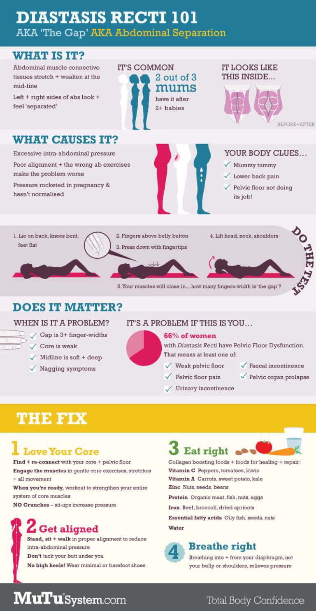

Have you ever heard of the "mom pooch"? Well this is "pooch" is the result of your abs separating to allow your baby to grow with ample space as your uterus expanded. The thing is...now you're not pregnant anymore, but your abs are still separated. Here is an infographic from the Mutu System, who specialize in helping women heal their bodies.
